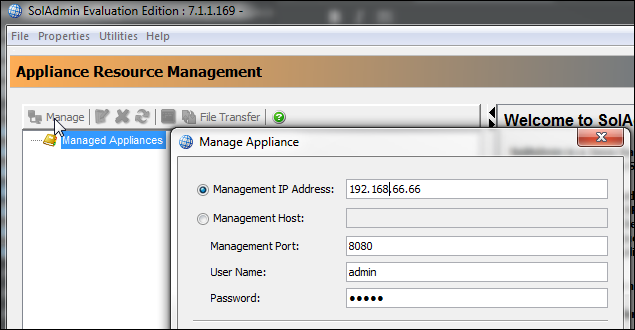
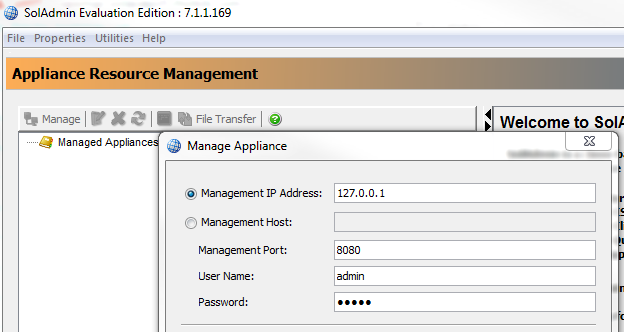

Managing the Message VPN
This topic describes how to manage the Message VPN on a Solace Virtual Message Router (VMR). After Solace Messaging for Pivotal Cloud Foundry (PCF) is installed, developers can provision Message VPNs on a VMR by creating instances of the service plans using Apps Manager or the Cloud Foundry Command Line Interface (cf CLI). Each service instance represents one Message VPN.
Developers can manage the Message VPN associated with a service instance by connecting to the VMR with the SolAdmin administration tool.
Retrieve Information
To retrieve the information required to connect to the VMR, perform the following steps:
- Log in to your deployment and choose the org and space where your Solace Messaging service instance and bound application exists.
$ cf login API endpoint: https://api.YOUR-SYSTEM-DOMAIN Email> user@example.com Password>
- View the
VCAP_SERVICESenvironment variable by retrieving the environment variables associated with your bound application:$ cf env YOUR-APP
- Locate your Solace Messaging service instance in
VCAP_SERVICESand record the following fields:managementUsername: The service instance’s management usernamemanagementPassword: The service instance’s management passwordmanagementHttpUris: The VMR’s IP address and management port, in the formathttp://IP-ADDRESS:MANAGEMENT-PORT/SEMP/V2
For more information about theVCAP_SERVICESfields, see the Understanding Credentials topic.
Connect to the Solace VMR
The procedure for connecting to the Solace VMR varies depending on whether you have direct connectivity to the network where you installed Solace Messaging.
This was the network that was picked in the Tile Installation and Configuration section.
Connect with Direct Connectivity
If you have direct connectivity to the network where you installed Solace Messaging, perform the following steps to connect to the Solace VMR:
- Download and install the SolAdmin administration tool from the Solace Developers Portal Download Page.
- Start SolAdmin.
- Click Manage to open the Manage Appliance window. 
- Under Management IP Address, enter the IP address of the VMR recorded above.
- Under User Name and Password, enter the management username and password recorded above.
- Click Ok. The VMR should now appear in the Managed Appliances list.

- To learn how to use SolAdmin to manage your Message VPN, see the included context specific tool help within the SolAdmin tool itself.
Connect without Direct Connectivity
If you do not have direct connectivity to the network where you installed Solace Messaging, perform the following steps to connect to the Solace VMR:
- Download and install the SolAdmin administration tool from the Solace Developers Portal Download Page.
- Open an ssh session to a host with connectivity to PCF’s internal network and create a tunnel to the VMR SEMP port:
$ ssh -L LOCAL-PORT:IP-ADDRESS:MANAGEMENT-PORT USER@HOST
Replace the placeholders with the following values:LOCAL-PORT: A free port on your local machineIP-ADDRESSandMANAGEMENT-PORT: The VMR’s IP address and management port, recorded above in the Retrieve Information sectionUSER: The username you use to log in to the hostHOST: The IP address or FQDN of the host
- Once you have established the SSH session, start SolAdmin.
- Click Manage to open the Manage Appliance window. 
- Under Management IP Address, enter
127.0.0.1. - Under Management Port, enter the local port chosen above when the SSH tunnel was created.
- Under User Name and Password, enter the management username and password recorded above.
- Click Ok. The VMR should now appear in the Managed Appliances list.
- To learn how to use SolAdmin to manage your Message VPN, see the included context specific tool help within the SolAdmin tool itself.
Note: The requirement to forward ports is a current limitation of the Solace Messaging tile in Open Beta. This will be improved in a future release to simplify this procedure.